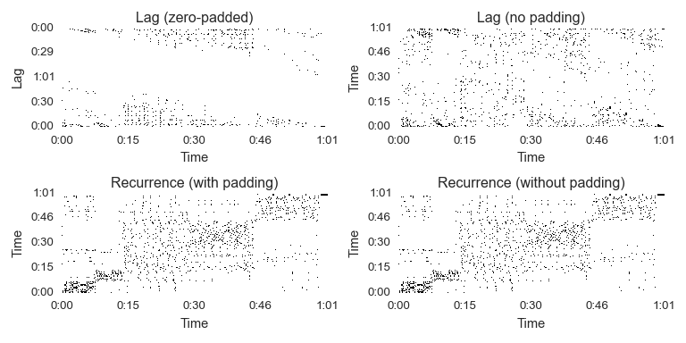

librosa.segment.lag_to_recurrence¶
-
librosa.segment.lag_to_recurrence(lag, axis=-1)[source]¶ Convert a lag matrix into a recurrence matrix.
Parameters: lag : np.ndarray or scipy.sparse.spmatrix
A lag matrix, as produced by
recurrence_to_lagaxis : int
The axis corresponding to the time dimension. The alternate axis will be interpreted in lag coordinates.
Returns: rec : np.ndarray or scipy.sparse.spmatrix [shape=(n, n)]
A recurrence matrix in (time, time) coordinates For sparse matrices, format will match that of lag.
Raises: ParameterError : if lag does not have the correct shape
See also
Examples
>>> y, sr = librosa.load(librosa.util.example_audio_file()) >>> mfccs = librosa.feature.mfcc(y=y, sr=sr) >>> recurrence = librosa.segment.recurrence_matrix(mfccs) >>> lag_pad = librosa.segment.recurrence_to_lag(recurrence, pad=True) >>> lag_nopad = librosa.segment.recurrence_to_lag(recurrence, pad=False) >>> rec_pad = librosa.segment.lag_to_recurrence(lag_pad) >>> rec_nopad = librosa.segment.lag_to_recurrence(lag_nopad)
>>> import matplotlib.pyplot as plt >>> plt.figure(figsize=(8, 4)) >>> plt.subplot(2, 2, 1) >>> librosa.display.specshow(lag_pad, x_axis='time', y_axis='lag') >>> plt.title('Lag (zero-padded)') >>> plt.subplot(2, 2, 2) >>> librosa.display.specshow(lag_nopad, x_axis='time', y_axis='time') >>> plt.title('Lag (no padding)') >>> plt.subplot(2, 2, 3) >>> librosa.display.specshow(rec_pad, x_axis='time', y_axis='time') >>> plt.title('Recurrence (with padding)') >>> plt.subplot(2, 2, 4) >>> librosa.display.specshow(rec_nopad, x_axis='time', y_axis='time') >>> plt.title('Recurrence (without padding)') >>> plt.tight_layout()
